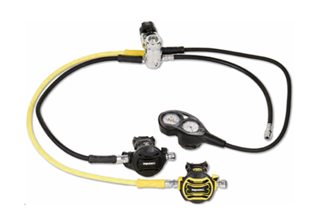
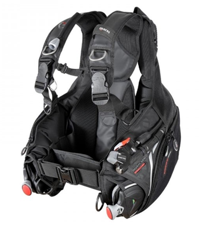
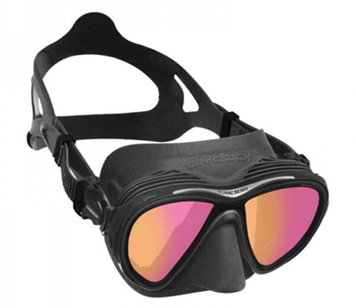
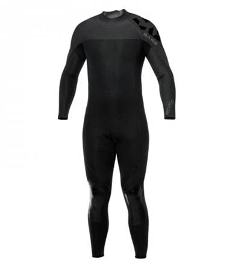
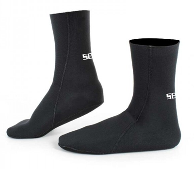
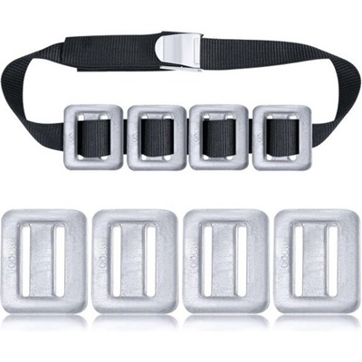
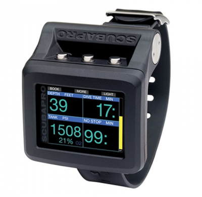
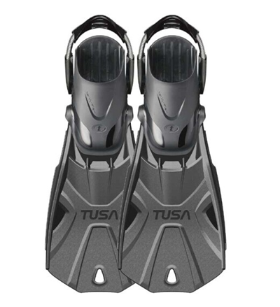

|  |  |  |  |
|
호흡기
수중에서 호흡하기 위해 필요한 장비입니다. |
BCD 조끼
부력을 조절하는 조끼입니다. |
마스크
시야를 밝혀주는 장비입니다. |
5mm 다이빙 웻슈트
다이빙 웻슈트는 보통 3mm, 5mm로 나뉩니다. |
|  |  |  |  |
|
다이빙 슈즈
핀을 신고 다이빙 중에 발목의 부상을 줄여줍니다. |
납 웨이트 & 벨트
물에서 잘 가라앉기 위해 착용하는 장비입니다. |
다이빙 컴퓨터
자신의 위치와 수심, 감압 시간 등을 확인하는 |
다이빙 핀
일명 오리발이라고도 부르는 다이빙 핀은 |